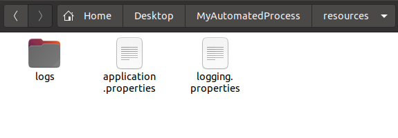

Java automation support
Keith Framework
A small Java framework for automated processes* that need durable configuration, reliable exception handling, and useful logging without repeated boilerplate code.
Configurable
Creates and preserves editable runtime properties beside the compiled process.
Resilient
Wraps application work in consistent exception handling for unattended runtime paths.
Observable
Ensures logging configuration exists so support teams can tune diagnostics when needed.
Modifiable Properties
The fundamental principle in the Keith framework is to support configured properties and expose them to team members responsible for the application before or during runtime. When an application starts, the Keith framework verifies the external properties file exists and the configured keys are present. The property values are preserved between executions. These properties are stored in an application.properties file found alongside the compiled automated process. For example, if an application named MyAutomatedProcess.jar lives on the Desktop, then the file path is ../MyAutomatedProcess/resources/application.properties

Note:
The Keith framework also ensures a logging.properties file exists. In the rare scenario where
logging levels need to be raised or lowered, this file is available to receive the
modifications.
Implementation
Since the Keith framework encloses code in exception-handling logic and enables Java's built-in logging, programmers have the freedom to build without writing boilerplate structures. For text instructions and more information about the Keith framework, check out the PDF
Note When changes are made to the configured property values in the code during development, the external property files must either be deleted (recommended), or manually updated between executions. When deleted, the external property files will be recreated using your changed values at the next run.
Enhancements
Another strength in the Keith framework is the ability to create enhancements supporting common functionality. These enhancements will typically take the form of an interface or superclass. Using these constructs provides direct access to the core of the Keith framework and leverages object-oriented programming principles as assets in building automated processes.
Steppable
This enhancement is an easy way to set breaks in an automated process, which may be used to isolate logical steps. These steps may be configured to stop the automated process until restart, record completed steps as they are reached in case the automated process needs to resume later, or support any number of scenarios where defined steps would be useful.
Databasable
Download this enhancement for basic support when incorporating databases with an automated process. The logic simplifies getting database connections, closing resources, and logging warnings as needed. Multiple databases may be registered and available throughout your classes. All that's necessary is for you to provide connection properties and JAR dependencies.